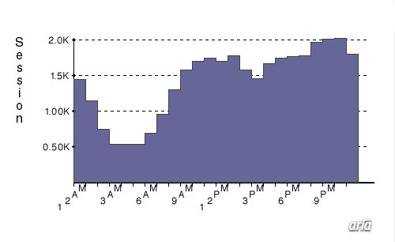

| Report Period: Sat Nov 21 1998 From: Sat Nov 21 1998 12:00 AM to Sun Nov 22 1998 12:00 AM US/Eastern |
 |
| All Data Points | |
|
34043 |
Total |
| Total Visits This report shows the distribution over time of the beginning times of visits to your website. One visit to your site consists of a number of contiguous hits from the same visitor. An old visit is ended and a new one begins when a request is made which does not have an internal referrer. In other words, any request coming from another site, from a bookmark, or from a typed URL begins a new visit. At most sites, this report will not include visits from visitors coming through proxy servers or visitors whose browsers do not support cookies. Your ARIA administrator can change the tracking of visitors from proxies and visitors without cookie-enabled browsers. |
| Report Generated: Sun Nov 22 1998
4:44 PM US/Eastern ARIA TM Version: 2.5.2 Copyright © 1998 Andromedia, Inc. All rights reserved. |